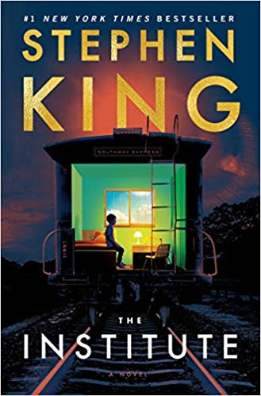

The Institute book by Stephen King is his latest psychological thriller (2019) about a mysterious operation (is it government-run? Corporate-run or other?) shrouded in mystery and evil. Whatever this is, abuducts selected children by first killing their parents, then taking these children to an unknown, hidden remote location. Their kidnapping is plotted to make it look like the kids murdered the parents before making themselves disappear.
The children wake-up into their new nightmare facing people who run all types of invasive tests on them. There are a few other kids on the premises, but eventually all will be put into the "Back Half", never to be seen again.
The children deduce that they were chosen because they had previously (likely unknonwingly) demonstrated supernatual abilities on some level, though uncontrolled and not practiced in any disciplinary manner. Whatever/Whoever this evil represents wants to test/develop/use their powers for some reason only known to the select adults involved.
Luke Ellis
Luke is the primary central character. He's genius-level smart, who was going to attend both MIT
and Emerson college in the Fall-at the age of 12. Luke lived on Wildersmoot Drive in Minneapolis
prior to his abduction to the Inistitute. He is a TK (tele-kinetic). He sums up the oppresive life
in the Institute by stating This place will knock the bitch out of her.
Pretty soon she'll be scurrying and flinching every time she sees a guy in a blue top.
Just like the rest of us.
Kalisha (aka Sha)
Sha is a spunky African-American teenager who is the first to befriend Luke upon arrival.Avery Dixon
Avery is six years old and from Orem, Utah. He is a very strong telepathic (TP).
Helen
Helen is a spunky teen with a developed body and green hair. She doesn't take sass from anybody and uses her body to get her way. Luke is infatuated with her.
Nicky
Nicky is a wild and unpredictable teen who often gets himself into trouble with the other kids and staff. He's mouthy and often uncooperative, though his remarks are sometimes very humorous.
Harry Cross
Harry is about 16 years old and clearly a bully, but the other kids quickly put him in his place.
Greta and her identical twin sister
These two are the latest characters to have just arrived at the Institute. I'm not far enough in my reading to know anything about them yet.
George, Iris, and others
All "Institute" children come in and eventually leave to the Back Half, never to be heard from again. Will anyone ever figure out what's happening in here? Or, like in Stephen King's It, is it true that sometimes evil does win? I can't divulge that information yet, as I'm still fairly early on reading this 561-page riveting book.